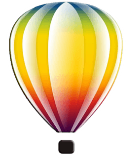
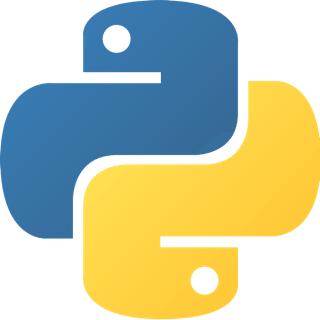
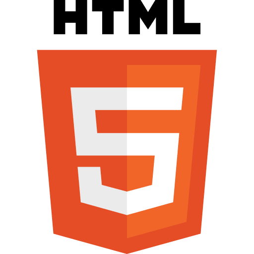

Sobre
A II JASI (II Jornada Acadêmica de Sistemas de Informação) é um evento que reunirá os docentes e discentes do Departamento de Tecnologia da Informação e do Curso de Bacharelado em Sistemas de Informação, para que sejam discutidos temas relevantes à formação profissional dos futuros egressos. O evento contará com palestras sobre a aplicação de sistemas de informação nas empresas, minicursos voltados ao estudo de tecnologias atuais e um painel sobre a realidade do mercado de trabalho na área de Tecnologia da Informação (TI) na região de Frederico Westphalen – RS.
O painel sobre o mercado de trabalho será mediado pela coordenação do curso, com a participação de alunos que já atuam no mercado de trabalho na área de Tecnologia da Informação. A intenção do painel é mostrar aos alunos que ainda não estão no mercado de trabalho as possibilidades que existem na região, bem como de que forma o Curso de Bacharelado em Sistemas de Informação tem apoiado os alunos no seu desenvolvimento profissional.
Os minicursos pretendem propiciar para os alunos a aplicação de tecnologias atuais, complementando os estudos realizados nas disciplinas do curso.
Localização
Linha 7 de Setembro. Frederico Westphalen, Rio Grande do Sul
Agenda
20 de Outubro - 19h00
| Atividade | Descrição |
|---|---|
| Palestra Sr. Valmor Prevedello (Prevedello Sistemas) |
O Mercado de Trabalho na Área de Tecnologia da Informação na Região de Frederico Westphalen Local: Auditório do CAFW |
21 de Outubro - 19h00
| Atividade | Descrição |
|---|---|
| Painel |
O Mercado de Trabalho na Área de Tecnologia da Informação na Região de Frederico Westphalen. Painelistas: Braian Jacomelli Piovesan, Daniel Prediger, Maik Basso, Maik Frizon, Marcelo Garbin, Péricles Guimarães Fortes e Tiago Tomazoni. Local: Auditório do CAFW |
22 de Outubro - 19h00
| Atividade | Descrição |
|---|---|
| Minicurso Mauro André Murari (Sistemas de Informação - UFSM/FW) |
MongoDB Local: Laboratório de Software - Bloco 06 |
|  Minicurso Talliny Dalla Nora (Sistemas de Informação - UFSM/FW) |
CorelDraw Local: Laboratório de Hardware - Bloco 06 |
| Minicurso Juliano Prettz (Sistemas de Informação - UFSM/FW) |
Testes de Software Local: Laboratório 5 - Prédio Central |
| Minicurso Dra. Rosane Beatriz Oliveira Severo (DTecInf - UFSM/FW) |
Latex Usando MDT/UFSM Local: Laboratório 4 - Prédio Central |
23 de Outubro - 19h00
| Atividade | Descrição |
|---|---|
|  Minicurso Iulisloi Zacarias e Paulo Henrique Vianna (Núcleo de Informática - UFSM/FW) |
Python/Django Local: Laboratório de Software - Bloco 06 |
|  Minicurso Maik Basso (Sistemas de Informação - UFSM/FW) |
Desenvolvimento Web com HTML, CSS e JavaScript Local: Laboratório 04 - Prédio Central |
| Minicurso Aluísio de Ávila, Gustavo Nathu Paulus e Ezequiel Prezotto (Sistemas de Informação - UFSM/FW) |
PhoneGap - Desenvolvimento de Aplicativos Móveis com HTML, CSS e JavaScript Local: Laboratório de Software - Bloco 06 |